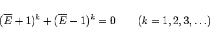
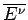
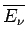
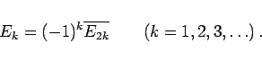
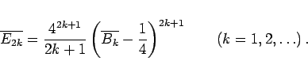

Inhalt Index DeskTop Bronstein

 Unendliche Reihen Reihen mit konstanten Gliedern Einige spezielle Reihen Bernoullische und Eulersche Zahlen
Unendliche Reihen Reihen mit konstanten Gliedern Einige spezielle Reihen Bernoullische und Eulersche Zahlen


Zur Definition der EULERschen Zahlen kann man in Analogie zu (7.61c) von der Rekursionsformel
|  | (7.62b) |
ausgehen, wobei auch hier nach Anwendung des binomischen Satzes überall  durch  zu ersetzen ist. Für die ersten Zahlen gilt:
|  | (7.62d) |
Zwischen den EULERschen und den BERNOULLIschen Zahlen besteht der Zusammenhang
|  | (7.63) |